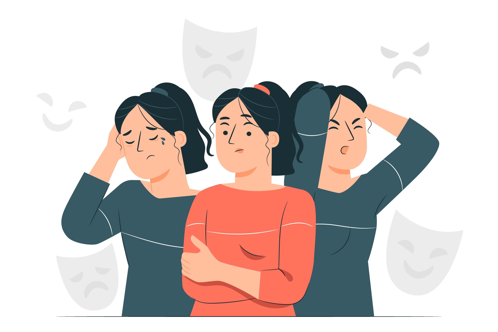

Human Hacking
The video is impressive right ?
Yet, it also shows hypnosis' limitations:
- The cop was friendly enough that allowed the driver to dominate the frame at will
- The hypnotist was himself shocked it worked, which tells us that it doesn't usually work
- The hypnotist admits that he picked a bunch of tickets trying to finally “hypnotize” a cop (ie.: it didn't work most of the times)
- That fact that one technique worked once tells you little about how effective it generally is. Namely, a friendlier approach might have worked as well, and without being creepy
Dark Psychology
Dark psychology refers to a set of tactics and techniques used to manipulate, influence, and control others for personal gain. It is sometimes referred to as "psychological warfare" or "emotional abuse" because of the harmful effects it can have on its victims.
Dark psychology can include tactics such as deception, manipulation, intimidation, and gaslighting. These tactics are often used to exploit vulnerabilities in individuals and to gain power and control over them.
Some of the techniques used in dark psychology include:
- Gaslighting: This involves manipulating someone's sense of reality and causing them to doubt their own perceptions and memories.
- Emotional manipulation: This involves using emotional tactics such as guilt, fear, or love to influence someone's behavior.
- Persuasion: This involves using persuasive language and techniques to convince someone to do something they might not want to do.
- Mind games: This involves playing games with someone's emotions and thoughts to gain control over them.
- Social engineering: This involves using deception and manipulation to gain access to personal information or to manipulate someone's behavior.
It is important to note that not all psychology is "dark," and that many psychological techniques can be used in positive and beneficial ways. However, it is important to be aware of the potential for manipulation and abuse when dealing with individuals who may use dark psychology tactics.
Gaslighting

Gaslighting is a form of psychological manipulation in which a person seeks to sow seeds of doubt in a targeted individual or in members of a targeted group, making them question their own memory, perception, or sanity. It is a form of emotional abuse and can be very damaging to the victim's mental and emotional well-being.
Gaslighting typically involves the following tactics:
- Denial: The gaslighter denies that something happened or denies their own behavior, even when there is evidence to the contrary.
- Projection: The gaslighter may accuse the victim of doing things they did not do or having feelings they do not have, projecting their own behavior or emotions onto the victim.
- Minimization: The gaslighter may downplay the severity of the victim's feelings or experiences, making them feel like they are overreacting or being irrational.
- Isolation: The gaslighter may isolate the victim from friends or family, making them more vulnerable and easier to manipulate.
- Confusion: The gaslighter may use inconsistent or contradictory statements, making it difficult for the victim to know what is true and what is not.
- Blame-shifting: The gaslighter may shift the blame for their own behavior onto the victim, making them feel guilty and responsible for the gaslighter's actions.
Gaslighting can be very damaging to the victim's mental and emotional health, causing them to question their own perceptions and reality. Victims may feel confused, anxious, and depressed, and may struggle to trust their own judgment or make decisions. It is important to recognize the signs of gaslighting and seek help if you believe you are being gaslit.
here is an example of gaslighting:Imagine that you are in a relationship with someone who is emotionally abusive and controlling. One day, you confront them about their behavior, telling them that you are unhappy and want to make changes in the relationship. Instead of listening to your concerns, the person responds by saying things like:
- "You're overreacting, it's not that bad."
- "I don't know why you're making such a big deal out of this."
- "You're the one who's being irrational and emotional."
This type of response is an example of gaslighting. By denying your feelings and making you feel like you are overreacting or being irrational, the person is trying to manipulate your perception of reality and make you question your own feelings and experiences. Over time, this can cause you to doubt your own judgment and become more dependent on the abuser, making it even harder to leave the relationship.
Gaslighting can also take the form of more subtle behaviors, such as making jokes or teasing you in a way that makes you feel like you are being overly sensitive or can't take a joke.
Emotional manipulation
Emotional manipulation refers to the use of tactics and strategies to influence or control someone's feelings, thoughts, and behaviors. Emotional manipulators may use a variety of techniques to gain power and control over others, often in subtle or covert ways. Some examples of emotional manipulation include:
- Guilt-tripping: making someone feel guilty or ashamed for not doing what the manipulator wants.
- Gaslighting: manipulating someone's perception of reality to make them question their own thoughts, feelings, or experiences.
- Love-bombing: overwhelming someone with affection, praise, and attention to make them feel valued and wanted.
- Stonewalling: refusing to communicate or shutting down emotionally in order to control the situation or avoid conflict.
- Triangulation: involving a third party to create tension and competition in a relationship or situation.
- Playing the victim: portraying oneself as the victim in order to gain sympathy, attention, or support from others.
- Withholding affection or attention: using the threat of rejection or isolation to control someone's behavior or emotions.
Emotional manipulation can be harmful and can lead to feelings of confusion, anxiety, and low self-esteem. It is important to recognize these behaviors and set healthy boundaries in relationships to prevent emotional manipulation from taking hold.
here's an example of emotional manipulation:Imagine you are in a relationship with someone who wants you to quit your job and move to a different city with them. You have reservations about this because you enjoy your job and have a support network in your current city. Your partner responds by using emotional manipulation tactics such as:
- Guilt-tripping: "I can't believe you won't do this for me after everything I've done for you."
- Gaslighting: "You're being paranoid. Nobody at your job actually likes you, and you don't have any real friends here."
- Love-bombing: "I love you so much, and I know that we can make this work. We'll be so happy together."
By using these tactics, your partner is attempting to influence your feelings and decision-making in order to get what they want. They are disregarding your own wants and needs and trying to manipulate you into doing something that may not be in your best interests.
Persuasion
Persuasion refers to the act of convincing or influencing someone to adopt a certain belief, attitude, or behavior. It is a key aspect of communication and can be used in a variety of contexts, from advertising and marketing to personal relationships and politics.
Effective persuasion requires an understanding of the target audience, their needs and desires, and their attitudes and beliefs. Persuasive communication can take many forms, including:
- Rational persuasion: using logical arguments and evidence to convince someone to change their beliefs or behavior.
- Emotional persuasion: appealing to someone's emotions, such as fear, happiness, or love, to influence their behavior.
- Social persuasion: using social norms and peer pressure to encourage someone to conform to a certain behavior or belief.
- Ingratiation: using flattery or compliments to gain someone's favor and influence their behavior.
- Authority persuasion: using the credibility and authority of a respected figure or institution to influence someone's beliefs or behavior.
It is important to note that persuasion can be used for both positive and negative purposes. Ethical persuasion seeks to help others make informed decisions that are in their best interest, while unethical persuasion seeks to manipulate or deceive others for personal gain or power.
Overall, persuasion is a powerful tool that can be used to influence others and bring about change. However, it should be used ethically and with consideration for the needs and desires of the target audience.
here's an example of persuasion:Let's say you are trying to persuade your friend to go to the gym with you. You could use rational persuasion by presenting them with logical arguments and evidence about the benefits of exercise, such as:
- "Going to the gym regularly can help you lose weight and improve your overall health."
- "Exercise can boost your mood and reduce stress and anxiety."
- "Working out with a friend can be more fun and motivating than going alone."
You could also use emotional persuasion by appealing to their emotions and desires, such as:
- "Imagine how confident and proud you'll feel when you start seeing results."
- "You deserve to take care of yourself and prioritize your health."
- "I really value our friendship and I think we could have a great time working out together."
By using both rational and emotional persuasion, you may be able to convince your friend to go to the gym with you. However, it is important to respect their decision and not resort to unethical tactics, such as coercion or manipulation, to get them to do what you want.
Mind Games

Mind games refer to a type of psychological manipulation where one person tries to control and influence the thoughts, emotions, and behaviors of another person for personal gain or power. Mind games can take many different forms and may be intentional or unintentional.
Some common examples of mind games include:
- Passive-aggressive behavior: expressing hostility or resentment in an indirect or subtle way, such as through sarcasm or backhanded compliments.
- Playing mind-reading games: assuming you know what someone else is thinking or feeling without actually asking them.
- Emotional blackmail: using threats, guilt-tripping, or manipulation to control someone's behavior or emotions.
- Triangulation: involving a third party to create tension and competition in a relationship or situation.
- Stalking: persistently and unwantedly following, contacting, or monitoring someone without their consent.
Mind games can be harmful and can lead to feelings of confusion, anxiety, and low self-esteem. It is important to recognize these behaviors and set healthy boundaries in relationships to prevent mind games from taking hold. If you feel like you are being manipulated, seek help and support from a trusted friend, family member, or mental health professional.
here's an example of a mind game:Let's say you have a friend who constantly makes you feel guilty for not spending enough time with them. Every time you decline their invitations to hang out, they respond with comments like:
- "I guess I'm just not important enough for you to make time for."
- "I always make time for you, but you never seem to prioritize our friendship."
- "I guess I'll just have to find someone else to hang out with since you're too busy for me."
By using these comments, your friend is manipulating you into feeling guilty and questioning your priorities. They may be intentionally or unintentionally playing mind games to control your behavior and emotions.
It is important to recognize these behaviors and set healthy boundaries in relationships to prevent mind games from taking hold. You can do this by being assertive about your needs and priorities, and by refusing to engage in manipulative behavior. If you feel like you are being manipulated, seek help and support from a trusted friend, family member, or mental health professional.
Social engineering

Social engineering is the practice of manipulating people into performing actions or divulging confidential information for the purpose of gaining unauthorized access to a system, network, or sensitive data. It is a type of cyberattack that targets the human element of security rather than technical vulnerabilities.
Social engineering attacks can take many different forms, such as phishing, pretexting, baiting, and quid pro quo. Some common examples include:
- Phishing: sending fraudulent emails, text messages, or social media messages that appear to be from a legitimate source in order to trick the recipient into revealing confidential information, such as login credentials or credit card numbers.
- Pretexting: creating a false identity or scenario to gain the trust of the victim and persuade them to reveal sensitive information or perform a certain action.
- Baiting: leaving a physical or digital lure, such as a USB drive or a fake social media account, in a public place to entice the victim into taking action that compromises their security.
- Quid pro quo: offering something of value, such as a gift or service, in exchange for confidential information or access.
Social engineering attacks can be difficult to detect and can have serious consequences, such as data breaches, identity theft, and financial losses. It is important to be aware of the tactics used in social engineering attacks and to practice good security hygiene, such as avoiding clicking on suspicious links, keeping software up to date, and verifying the identity of anyone asking for sensitive information.
here's an example of a social engineering attack:Let's say a hacker sending a threatening email to a victm telling to give money.
check webhacking